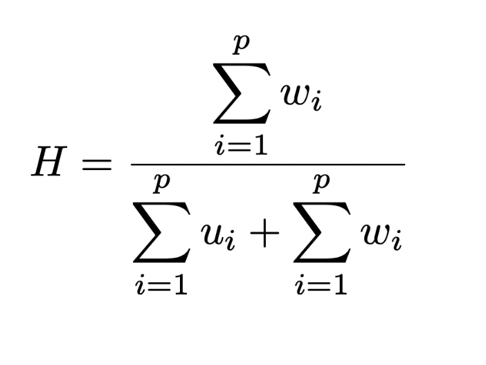
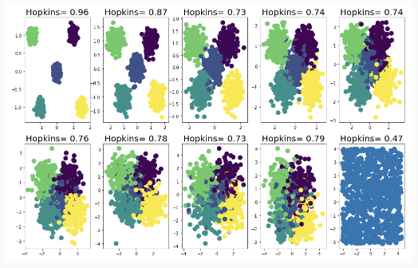
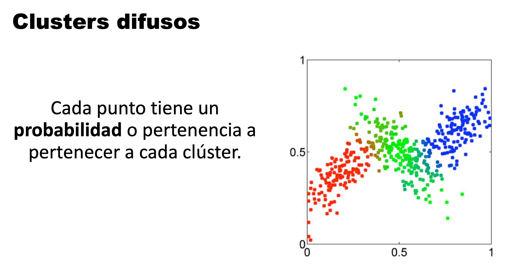

3 Análisis de Cluster

3.1 Objetivos
Encontrar algorítmicamente grupos de entidades tales que:
- La similitud intragrupo es alta
- La similitud entre grupos es baja
Las medidas de distancia y similitud son cruciales en este proceso
3.2 Criterios para agrupar
Existen varias nociones de clusters basados en:
Distancias: Cada punto está más cerca de todos los puntos de su grupo que cualquier punto de otro grupo.
Centroide: Cada punto está más cerca del centro de su grupo que del centro de cualquier otro grupo.
Contigüidad: Cada punto está más cerca de al menos un punto de su grupo que cualquier punto de otro grupo.
Densidad: Los clusters son regiones de alta densidad separadas por regiones de baja densidad.
3.3 Estadístico de Hopkins
Antes de agrupar un conjunto de datos, podemos probar si realmente hay clústeres. Necesitamos probar la hipótesis de la existencia de patrones en los datos contra un conjunto de datos distribuidos uniformemente (distribución homogénea).
- Evalúa la tendencia de los cluster
- Mide si un conjunto de datos contiene cluster naturales
- Utiliza un test estadístico para la aleatoridad espacial
La estadística de Hopkins se calcula de la siguiente manera:
- Muestrea p puntos a partir del conjunto de datos
- Generar p puntos aleatorios en el mismo espacio
- Calcula H, donde:
- w_i: distancia desde el punto aleatorio i hasta el vecino más cercano en los datos originales
- u_i: distancia desde el punto de muestra i hasta el vecino más cercano en los datos originales

Los valores de H cercanos a 0,5 indican datos aleatorios, a 1 indica datos altamente agrupados y a 0 indica una distribución uniforme.
 ## Métodos de Detección
Existen diferentes métodos para detectar clusters:
- Métodos aglomerativos (parte de cada punto)
- Métodos divisivos (parte con todos los datos)
- Métodos determinísticos (un punto está asignado a un solo cluster)
- Métodos probabilísticos (prob. de pertenencia)

